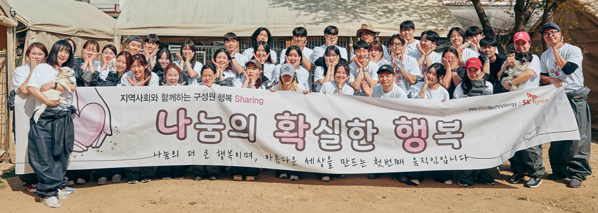
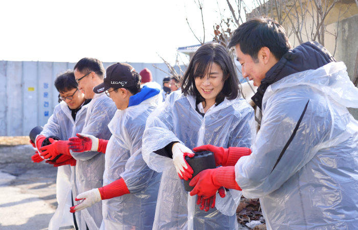
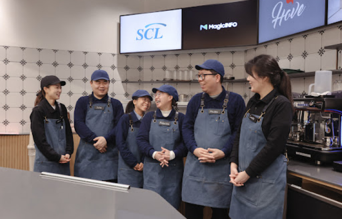

Community Activities
지역 사회활동
-
나눔의 확실한 행복

그 계획의 일환으로 커핀그루나루는 매월 NGO 단체들과 연계하여 기부스티커
캠페인을 진행합니다. 기부스티커 캠페인이란 커피 한잔에 100원의 착한 기부를 말하는 것으로, 고객이 구입한 커피 한잔에 100원 기부를 통해서 착한 소비와
착한 기부의 중요성을 알리는 캠페인입니다. 매월 “새로운 기업＂과의 협력을 통해 기부스티커 캠페인을 진행합니다. 커핀그루나루는 여러분의 후원으로 탄자니아
봉사활동을 위한 기부금 및 물량지원을 넉넉하게 할 수 있었습니다. 앞으로도 어려운 이웃과 함께할 수 있는 다양한 사회공헌 활동을 지속적이며 적극적으로 참여하는
기업이 될 것입니다.
-
희망 연탄나눔 봉사활동

- 희망 연탄나눔 봉사활동
- 커핀그루나루 청계천점에서 1차 일일카페를 진행하였으며 일일카페에
모인 성금은 청산리역사대장정의 대원팀에 기부됩니다.
커핀그루나루는 민족의식을 고취시키고
대한민국의 소중함을 알리는데 힘쓰겠습니다.
-
청산리역사 대장정 일일카페

- 청산리역사 대장정 일일카페
- 커핀그루나루 청계천점에서 1차 일일카페를 진행하였으며 일일카페에
모인 성금은 청산리역사대장정의 대원팀에 기부됩니다.
커핀그루나루는 민족의식을 고취시키고
대한민국의 소중함을 알리는데 힘쓰겠습니다.